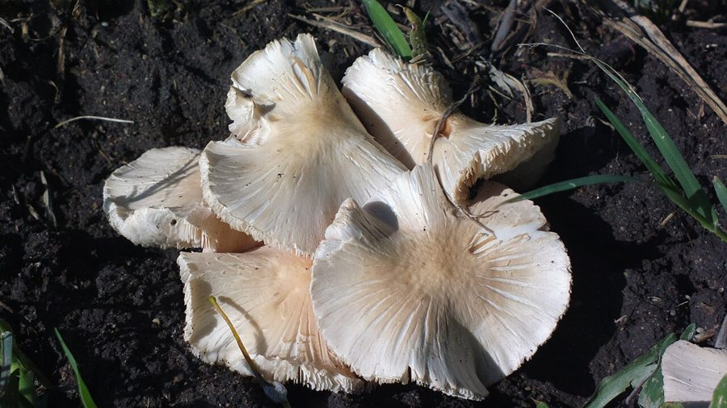

छोटा दीमक छत्ताSmall Termite Mushroom
Termitomyces clypeatus · Lyophyllaceae · FNG-0002

- Scientific name
- Termitomyces clypeatus R.Heim
- Family
- Lyophyllaceae
- Hindi
- छोटा दीमक छत्ता
- Status here
- native
- IUCN
- not evaluated
When to look कब देखें
Expected mainly in June, July, August.
छोटा दीमक छत्ता / Small Termite Mushroom
Termitomyces clypeatus R.Heim — Lyophyllaceae
छोटा दीमक छत्ता — बड़े दीमक छत्ते का छोटा साथी — वही टीले, वही रिश्ता दीमक से, वही छोटी मानसूनी खिड़की। बड़े के पास अनदेखा रह जाता है, लेकिन उतना ही खाने योग्य और उतना ही पहचानने योग्य।
Quick Identification शीघ्र पहचान
| Feature | Description |
|---|---|
| Cap Size & Shape | Small to medium cap (5–10 cm wide), strongly humped when young, shield-shaped when old |
| Perforatorium | Central spike (0.5–1.5 cm long), shorter and less prominent than in T. heimii |
| Colour | Cap grey-brown to dark brown at the centre, paler buff toward margins |
| Gills | White, crowded, and free (unattached to the stem) |
| Stipe (Stem) | White, fibrous (5–10 cm long above ground) with an underground pseudorrhiza |
| Association | Found emerging near active soil mounds of Odontotermes termites, often with T. heimii |
Field tip: Look for a smaller, greyish-brown spiky-capped mushroom emerging from a termite mound. The shield-like shape (flat at maturity with a small central spike) and darker color distinguish it from the larger, creamy-white T. heimii.
Morphology आकृति विज्ञान
| Feature | Measurement |
|---|---|
| Cap (pileus) diameter | 5–10 cm |
| Stipe height (above ground) | 5–10 cm |
| Stipe diameter | 10–20 mm |
| Pseudorrhiza length | 20–40 cm |
| Spore dimensions | 6.5–8 × 3.5–4.5 µm |
Cap (pileus): 5–10 cm diameter. Strongly umbonate when young; expands to broadly shield-shaped (clypeate) — flatter than T. heimii at maturity. Surface dry, grey-brown to dark umber at centre, pale buff towards margin. Margin sometimes wavy or irregularly lobed at full expansion.
Perforatorium: Present, 0.5–1.5 cm long — present but shorter and less sharp than T. heimii's. Same function: connects above-ground cap to underground fungus garden.
Gills: White, crowded, free from stem. Similar to T. heimii.
Stem (stipe): 5–10 cm above ground, 1–2 cm thick, white, tough. Pseudorrhiza extends underground to the termite fungus garden.
Spore print: White.
Flesh: White, firm, does not discolour when cut.
हिंदी: T. heimii से ज़्यादा चपटी टोपी — ढाल (shield) की तरह। बीच में काँटा। गिल्स सफेद। तना सफेद, नीचे जड़ जो टीले तक जाती है।
Relationship to Termitomyces heimii *T. heimii* से रिश्ता
T. clypeatus and T. heimii share the same:
- Host termite: Odontotermes spp. — the mound-building termites of UP
- Mutualistic relationship: both are cultivated in underground fungus gardens
- Season: both fruit after the first monsoon rains
- Ecology: decomposers via the termite–fungus system
They differ in:
| Feature | T. heimii | T. clypeatus |
|---|---|---|
| Cap size | 8–20 cm | 5–10 cm |
| Cap colour | Creamy white to pale tan | Grey-brown, darker |
| Cap shape at maturity | Broadly convex | Shield-shaped, flatter |
| Perforatorium | Long, prominent | Shorter, less prominent |
| Relative abundance | Often dominant | Often co-occurring |
Both can appear on the same mound, sometimes even at the same time. In some years one dominates; in others, the other does.
हिंदी: दोनों एक ही टीले पर हो सकते हैं। T. heimii बड़ा और हल्का रंग, T. clypeatus छोटा और गहरा रंग। बीच का काँटा दोनों में है, लेकिन T. clypeatus का छोटा।
Ecological Role पारिस्थितिक भूमिका
Same as T. heimii — see FNG-0001 entry for the full termite–fungus mutualism explanation.
In brief: Termitomyces clypeatus is cultivated by Odontotermes termites in underground fungus gardens. The mushroom fruiting body appears above ground only during the monsoon, disperses spores, and provides a seasonal food resource for humans and animals.
Dual-species systems: On mounds hosting both T. heimii and T. clypeatus, the two species appear to partition the fungus garden — different chambers or different areas of the comb may host different Termitomyces strains. Research on this partitioning is limited for Indian populations.
हिंदी: दीमक-कवक रिश्ते का पूरा विवरण FNG-0001 (दीमक छत्ता) में देखें। T. clypeatus उसी तंत्र का हिस्सा है।
Phenology मौसम और समय
- Identical to T. heimii: monsoon trigger, first heavy rains, very brief window
- May fruit slightly later than T. heimii on the same mound in some years
- Cap deliquesces (melts) within 48–72 hours — collect at dawn
हिंदी: T. heimii जैसा ही — पहली मानसूनी बारिश, उसी टीले से, उसी छोटी खिड़की में। कभी-कभी T. heimii के बाद।
Human Use मानव उपयोग
Edible — same preparation as T. heimii. The smaller size means it is less often deliberately sought, but when collected alongside T. heimii, both are cooked together.
The smaller size also means more caps per unit weight — useful for dishes where texture matters.
हिंदी: खाने योग्य — T. heimii जैसी ही सब्ज़ी बनती है। छोटा होने के कारण कम तोड़ा जाता है, लेकिन साथ में मिले तो दोनों साथ पकाए जाते हैं।
Expected Locally स्थानीय रूप से अपेक्षित
Not a field record. Written from published accounts for eastern Uttar Pradesh. No confirmed local sighting yet — if you have seen it, that is what the atlas needs.
अभी तक स्थानीय पुष्टि नहीं। यह विवरण प्रकाशित स्रोतों से है, किसी अवलोकन से नहीं।
- Common in moist areas of Basti district — near ponds, low-lying fields, Saryu floodplain margins
- Often found on old, established termite mounds in orchard margins, roadsides, and uncultivated fields
- Both species can appear on the same mound, sometimes even at the same time
Distribution वितरण
Global range: Widespread in tropical and subtropical zones of Africa and southern Asia, co-extensive with fungus-growing termites.
In India: Widespread in Central, Southern, and Eastern India, particularly in the Indo-Gangetic plains and scrub forest patches.
In Uttar Pradesh: Distributed across central and eastern districts, particularly in rural borders and field margins near active termite mounds.
In Basti district / eastern UP: Locally common, fruiting from the same Odontotermes mounds that support Termitomyces heimii.
Range notes: No significant range changes documented; its occurrences are strictly tied to subterranean termite nests.
Research Questions शोध प्रश्न
Anyone can investigate these | कोई भी इन प्रश्नों की जाँच कर सकता है
- Does the same mound produce both species? / क्या एक ही टीले पर दोनों प्रजातियाँ होती हैं? — Note which species appear on each mound across multiple monsoon events.
- Which appears first — T. heimii or T. clypeatus? / कौन पहले निकलता है? — Record emergence dates from mounds hosting both.
- Is T. clypeatus more common than people think? / क्या यह लोगों की सोच से ज़्यादा आम है? — Count separately from T. heimii across 10 mounds.
- Do termite mound sizes correlate with which species fruits? / टीले का आकार और प्रजाति में कोई रिश्ता है? — Measure mound height/base width and record which Termitomyces appears.
Similar Species मिलती-जुलती प्रजातियाँ
| Species | How to tell apart | हिंदी |
|---|---|---|
| Termitomyces heimii | Larger (8–20 cm); creamy white; longer perforatorium | बड़ा; क्रीमी-सफेद |
| Termitomyces microcarpus | Very small (1–3 cm); grows in dense clusters of 20–50 | बहुत छोटा; झुंड में दर्जनों |
| Agaricus campestris | No perforatorium; not on termite mounds | काँटा नहीं; टीले पर नहीं |
Field rule: Smaller than a hand span, grey-brown cap, near a termite mound, with a central spike — Termitomyces clypeatus.
Taxonomy & Classification वर्गीकरण
Original description. Termitomyces clypeatus was described by the French mycologist Roger Heim in 1951 in Bulletin du Jardin Botanique de l'État a Bruxelles 21: 207. Type locality: Tropical Africa. The genus name Termitomyces refers to its symbiotic association with termites, and the species epithet clypeatus is Latin for shield-shaped, referring to the mature cap profile.
Subspecies. Monotypic — no subspecies are currently recognised.
Family and order placement. Belongs to the order Agaricales, family Lyophyllaceae. Lyophyllaceae is a family of gilled mushrooms within the order Agaricales, containing species that are saprotrophic, parasitic, or mutualistic (such as the termite-associated Termitomyces).
Phylogenetic notes. The genus Termitomyces is obligately symbiotic with Macrotermitinae termites. Molecular data indicates T. clypeatus is closely related to T. heimii but forms a distinct species-level clade within the genus.
IUCN status rationale. This species has not been formally assessed by the IUCN Red List. As a wild-collected edible mushroom that fruits predictably in association with termite colonies, the regional population remains locally stable but is sensitive to termite mound destruction.
Photo Gallery फोटोक्लाउड
Atlas Connections संबंधित प्रजातियाँ
- Termite Mushroom — companion species on same termite mounds; larger cap (8–20 cm), paler colour (FNG-0001)
- Mound-building Termite — obligate cultivator; same Odontotermes obesus colonies grow both Termitomyces species (SFL-0001)
References संदर्भ
- Heim, R. (1951). Les termes d'Afrique tropicale et leurs champignons. Bulletin du Jardin Botanique de l'État a Bruxelles, 21: 205–222.
- Natarajan, K. & Raman, N. (1983). Studies on South Indian Agaricales XII. Termitomyces Heim. Kavaka, 11(2): 59–70.
- Otieno, J.N. et al. (2016). Ethnomycological knowledge and use of Termitomyces in Africa and Asia. Journal of Ethnobiology and Ethnomedicine, 12(1): 22.
- Aanen, D.K. et al. (2002). The evolution of fungus-growing termites and their mutualistic fungal symbionts. Proceedings of the National Academy of Sciences, 99(23): 14887–14892.
- GBIF Occurrence Data — Termitomyces clypeatus, India (2026).
Source file: species/fungi/mushrooms/termitomyces_clypeatus.md